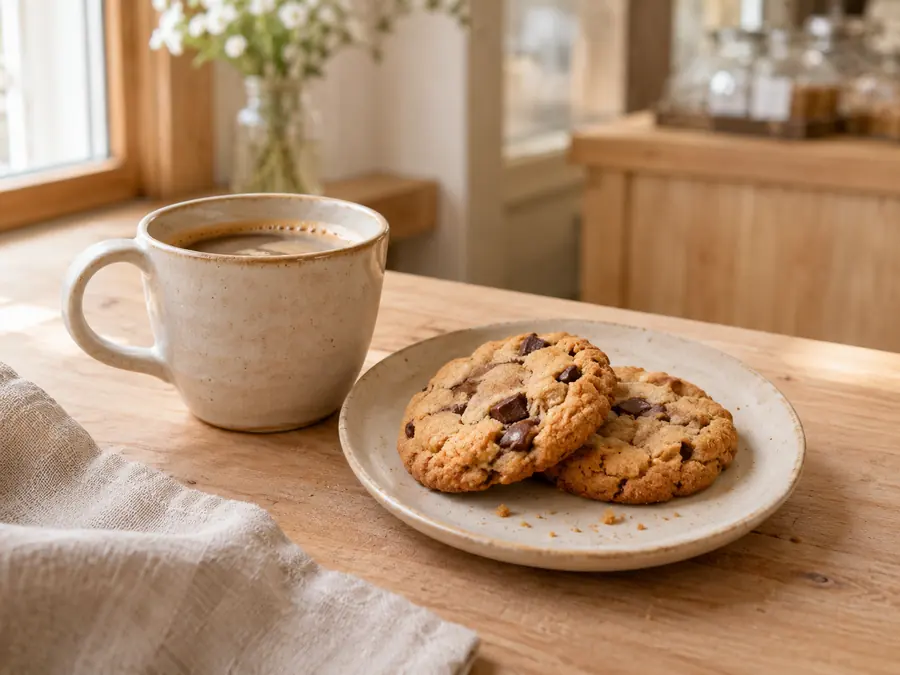
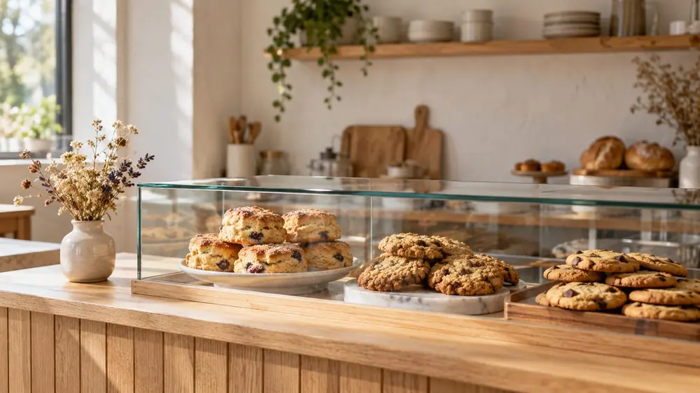

OUR SHOP
お店のこと
焼き菓子と珈琲の、小さな店です。
「窓から見える焼き場」の店
お店の名前は、通りに面した大きな窓から、焼き場が見えることから付けました。朝7時から、窓の向こうで生地をこね、型に入れ、焼き上げています。
通りがかりに「いい匂いがしたので」と入ってくださる方も多く、それがいちばんうれしい瞬間です。
OUR WAY
大切にしている3つのこと
材料はシンプルに
小麦粉・バター・卵・砂糖。香りづけも、なるべく素材そのものの味で。
その日のぶんだけ
作りおきはしません。売り切れたら、その日はおしまいです。

珈琲と一緒に
焼き菓子に合う、やさしい味の珈琲を用意しています。持ち帰りもできます。
店内のようす

店内は、ショーケースと小さな窓ぎわの席が2つ。お持ち帰りが中心です。